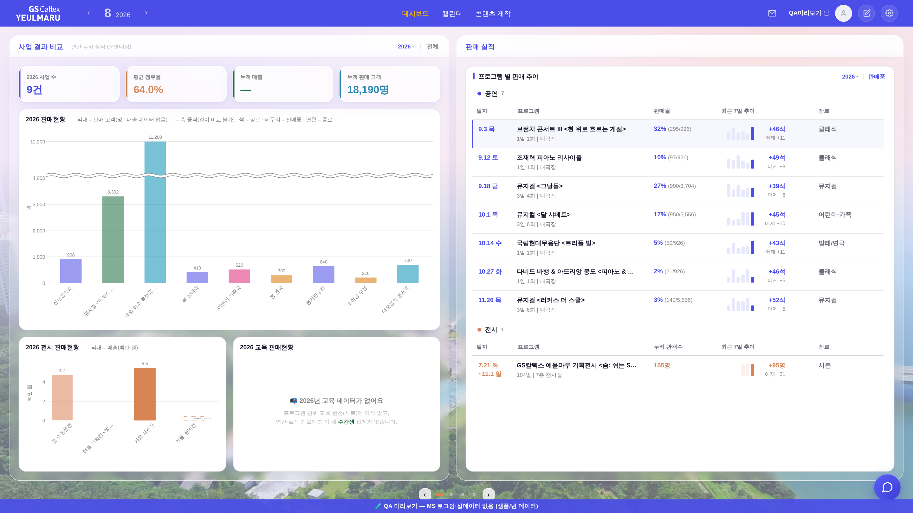
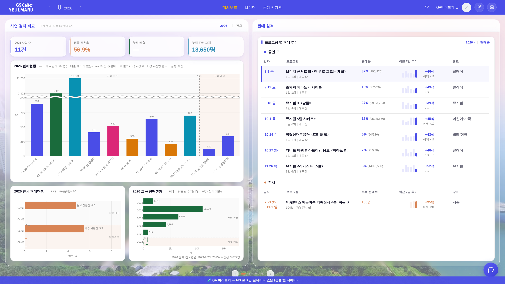
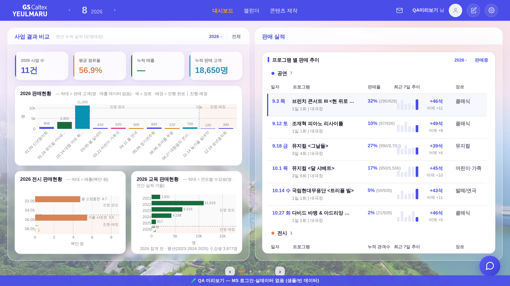
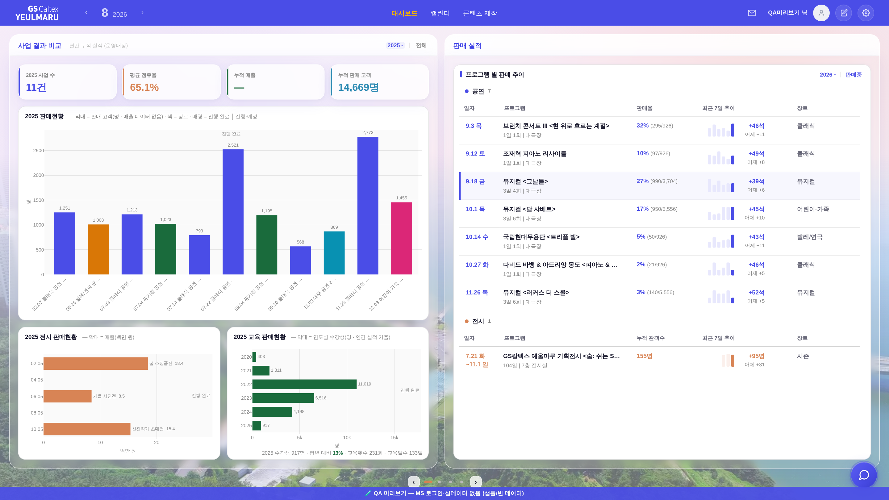

지시(운영자): 「전시랑 교육은 가로 데이터로 하자」 · 「공연 전시 교육 모두 그 바닥면에 날짜가 없어. 기본 차트 구성을 좀 반영좀 해줘」 · 「현재 진행중인 공연하고 아닌거하고 차트 음영 불투명도로 구분해놨는데 … 차트 영역에 박스를 구획해줘. 그거를 바닥면에 만들 날짜를 기준으로 … 종료 전후가 나오면 되니까」 · 「특정 시점에 공연이 몰리게 되는데 … 적절히 상징적으로만 날짜를 써주면 됨」 · 「진행 완료, 진행 예정(진행중) 구획은 박스로. 강조부분이 진행 예정에 … 차트 자체의 음영은 모두 동일하게」.
화면 = QA 진입로(?qa=admin) + 레이아웃 스모크와 같은 목데이터(tools/qa_mock_ops.mjs) · 실데이터·PII 미접촉.


| 축 | 전 | 후 |
|---|---|---|
| 바닥면(눈금) | 사업명만(45°) | 날짜 + 이름(공연 = 01.09 신년음악회) · 가로 차트는 날짜만(02.05), 이름은 막대 옆 |
| 전시·교육 | 세로 막대 / 교육 = 게이지 | 가로 막대 — 반쪽 폭에선 45° 이름표가 겹친다 · 교육은 사업 단위 원천이 없어 연도별 수강생(그 축에선 연도가 곧 날짜) |
| 진행 상태 | 막대 투명도(.55/1) + 판매중 테두리 | 구획 박스 2개(진행 완료 = 중립 · 진행·예정 = 강조) + 「오늘」 경계 파선 · 막대 음영은 전부 동일 |
| 낮은 화면 | — | 공연 막대가 최소(180)에 닿고도 모자라면 반반 줄 두 차트가 같은 높이로 줄어 유리 안선을 안 넘는다(1366×768 실측) |
| 목데이터 | 2026분이 전부 과거 | 미래 2건 추가 — 구획이 두 영역으로 갈린 상태를 게이트가 실제로 재게 됨 |
막대를 실제 날짜 좌표에 놓으면 같은 주에 몰린 사업들이 서로 겹쳐 못 읽는다(1월 뮤지컬 4회차가 이틀에 몰리는 실제 분포). 운영자가 짚은 「특정 시점에 공연이 몰리게 되는데 … 적절히 상징적으로만 날짜를」이 바로 그 지점이라, 균등 간격(카테고리) 축은 그대로 두고 눈금 라벨만 날짜로 바꿨다. 정렬이 이미 날짜순이라 「오늘」 경계는 인덱스 하나로 떨어지고, 그 자리에서 구획이 갈린다. 정확한 일자는 툴팁이 진다.


npm run smoke:layout — 1920×1080 · 1600×900 · 1366×768 · 2560×1440 · 1280×800 전부 PASS(좌↔우 박스·흰 도형 하단선 Δ0 · 안선 밀착 · 재계산 흔들림 0).tools/scratch/probe_3split_flow.mjs) — 기본 → 판매중 → 전체 → 연도 드롭다운 → 2025 → 슬라이드2 → 토글 왕복까지 JS 오류 0 · 전 상태에서 두 반쪽 카드 하단선 Δ0.probe_narrow.mjs) 전 경로 0 · check_design 1590/1590(신규 색·토큰 0) · check_refs ✓ · check_wiring ✓ · build_annual_yr PASS._srailAlignTop 한 번 더(멱등).